Fundamentos y usos prácticos de Docker
Clase 1 : Introducción a contenedores Docker
Temas de clase 1
Introducción a contenedores Docker
Introducción al curso
Presentación
Instructor: Cristian O. Giambruni
- Contacto: cgiambruni@gmail.com
- APU. Facultad de Informática, UNLP
- Mat. CPCIBA 2402
- Docente CFL 410, Omar Nuñez
- Sysadmin Lotería BsAs
- Programador y Sysadmin Startup
- Coordinador IDEP Informática
Objetivos del curso
- Introducir concepto general de contenedores.
- Introducir al uso de Docker para conteinerización.
- Mostrar generalidades del uso de contenedores Docker y mencionar usos de dicha tecnología.
- Uso práctico de Docker
- Introdocir al uso de bash para depuración de contenedores Docker
- Está orientado a: desarrolladores, administradores de sistemas, entusiastas IT, home labers.
Organización del curso
- Apuntes de clases teóricas: docker.idepba.com.ar
- Laboratorios y práctica
- Trabajo final para aprobación del curso
Introducción a contenedores
Contenedor
En informática, un contenedor o container, es una unidad ligera y portátil de software que empaqueta una aplicación y todas sus dependencias, permitiendo que se ejecute de manera consistente en cualquier entorno.
Entonces... ¿Para qué vamos a usar contenedores?. Básicamente, para portar nuestra aplicación y ejecutarla de la misma manera en nuestra PC que en cualquier ambiente de desarrollo.
Un poco de historia
En los años 1960-1970, IBM introdujo la virtualización en los mainframes, lo que permitió ejecutar múltiples sistemas operativos en una sola máquina física.
En 1992, el programador finlandés Linus Torvalds publicó bajo licencia GNU GPL2 la versión 0.12 del kernel de Linux. Desde entonces, Linux se considera software libre.
En 2008 surgieron los Linux Containers, también conocidos por su acrónimo LXC. Aprovechando características como cgroups y namespaces disponibles a partir de la versión 2.6.24 del kernel de Linux, LXC permite desarrollar una tecnología de virtualización a nivel de sistema operativo. LXC permite que una máquina que ejecuta Linux corra múltiples instancias de espacios de usuario aislados, dando origen al término contenedor.
En 2013 se liberó Docker como código abierto, inicialmente basado en LXC. Pero al año siguiente, con el lanzamiento de la versión 0.9 de Docker, dejó de utilizar LXC para usar su propio motor llamado libcontainer, escrito en Go.
Desde entonces, Docker ha crecido en popularidad, convirtiéndose en uno de los proyectos con más estrellas en GitHub, más forks y con miles de colaboradores.
Máquinas virtuales
A menudo, al introducir el concepto de contenedor, surge la confusión sobre si se trata de un tipo de máquina virtual. Repasemos los conceptos de máquina virtual:
Una máquina virtual (VM) es un entorno aislado que emula un sistema informático completo (a nivel hardware), permitiendo ejecutar un sistema operativo y aplicaciones como si fueran una computadora física, utilizando recursos compartidos del hardware del host.
Cada máquina virtual requiere la asignación de recursos como procesador, disco, memoria, red, etc., y un sistema operativo. Para gestionar estas tareas se necesita un hipervisor.
- Hypervisores mas conocidos
- VMware vShere/ESXi
- Hyper-V
- VirtualBox
- Proxmox VE (KVM)
Arquitectura Máquinas virtuales
Cada máquina virtual requiere un sistema operativo completo (kernel, utilidades del sistema, interfaz de usuario, etc) para funcionar. 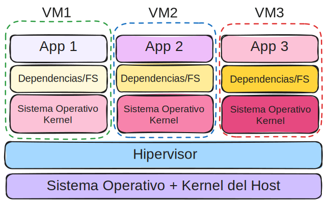 Esto implica que, para correr solo una aplicación o parte de una aplicación mas grande, se debe instalar y mantener un SO completo por cada VM. A menudo, el SO consume más recursos que la propia aplicación.
Arquitectura Contenedores
Cada container, utiliza el kernel del sistema operativo del host. Solo contienen las aplicaciones y sus dependencias necesarias para funcionar.

Los contenedores utilizan aislación a nivel de proceso proporcionado por el kernel del host. Incluso entre dos o más containers pueden compartir sus dependencias y file system. También es posible limitar el uso de CPU y memoria a cada contenedor, tal cual como se haría en una VM. A la arquitectura de contenedores se le suele decir como un tipo de virtualización liviana.
Containers vs. VM
| Caracteristica | VM | Container |
|---|---|---|
| Aislamiento | Completo (a nivel hw) | Liviano (proceso) |
| Recursos | Mas uso de recursos | Menos uso de recursos |
| Arranque | Lento | Rapido |
| SO | Multiples SO | Mismo kernel host |
| Portabilidad | Limitada, depende del hipervisor | Alta, ejecutable en cualquier entorno |
| Seguridad | Fuerte aislamiento de seguridad | Aislamiento a nivel de proceso |
Esto no significa que las máquinas virtuales sean obsoletas en comparación con los contenedores. En algunas situaciones, el uso de contenedores no será posible. Por ejemplo, cuando se necesitan diferentes sistemas operativos para cada aplicación.
Casos de usos de contenedores
- Desarrollo de microservicios: Adecuados para arquitecturas de microservicios donde cada componente de la aplicación se despliega de manera independiente.
- Integración Continua y Despliegue Continuo:Facilitan la creación de pipelines de CI/CD, permitiendo despliegues rápidos y frecuentes.
- Containerización de aplicaciones legacy: Se puede modernizar la infraestructura de aplicaciones no pensadas para contenedores. La conteinerización ayuda a la portabilidad y automatización de despliegues.
- Despliegue sencillo de aplicaciones: Con solo copiar y pegar una instrucción o un archivo de texto es posible tener aplicaciones complejas deployadas para ambientes de prueba rápidamente.
Existen varias tecnologías que utilizan contenedores, entre ellas: LXC, LXD, Docker, Podman, containerd. Además, hay herramientas de orquestación y gestión de contenedores como Kubernetes, OKD.
Consultas
Introducción a Docker
¿Qué es Docker?
Docker es una plataforma de código abierto que facilita la creación, despliegue y ejecución de aplicaciones dentro de contenedores. Docker permite a los desarrolladores empaquetar una aplicación con todas sus dependencias en un contenedor, asegurando que la aplicación se ejecute de manera consistente en cualquier entorno.

Docker, es hoy en día la tecnología de contenedores mas utilizada y más popular.
¿Por qué Docker?
- Comunidad: Existe una gran comunidad aportando tanto al desarrollo de Docker como imágenes Docker. Hay numerosos foros, tutoriales y cursos en línea disponibles.
- Facilidad de uso: Ofrece una interfaz de usuario sencilla y comandos intuitivos. Diversas herramientas gráficas.
- Soporte empresarial: Muchas empresas ofrecen soporte y soluciones basadas en Docker para entorno empresariales.
- Licencia: Docker no requiere una licencia para su uso.
- Compatibilidad: Docker es compatible con diversas plataformas y sistemas operativos, lo que facilita su instalación e implementación.
Componentes de Docker
- Docker engine: El motor de Docker es la parte central de Docker, que permite a los usuarios crear, ejecutar y gestionar contenedores.
- Images: Una imagen Docker es una plantilla de solo lectura que define qué software y configuraciones incluye el contenedor. Las imágenes son inmutables y se pueden versionar.
- Containers: Un contenedor Docker es una instancia en ejecución de una imagen. Los contenedores son entornos aislados donde se ejecutan aplicaciones. Un contenedor está asociado a un estado. Los estados de un contenedor pueden ser:
created,running,restarting,removing,paused,exited,dead. - Registry: También conocida como DockerHub es un registro o repositorio de imágenes de contenedores públicas y privadas. Los desarrolladores pueden usar Docker Hub para buscar y descargar imágenes, así como para compartir las suyas propias.
Consultas
Instalación de Docker
Instalación de Docker
Docker está disponible para las plataformas mas populares; Windows, GNU/Linux y MacOS.
- Docker Desktop: La aplicación oficial de Docker. Es una interface de usuario gráfica. A su vez contiene el Docker engine.
- Docker Desktop para Windows (Minimo Win 10 Home o Pro 21H2 / WSL version 1.1.3.0)
- Docker Desktop para GNU/Linux
- Docker Desktop para MacOS
- Docker engine: También llamado Docker-CE. Es el motor de docker. Lo básico para que Docker funcione.
En el curso veremos el uso de Docker CLI, ya que no siempre podemos contar con una interface gráfica, ejemplo cuando se corre en servidores.
Instalando DOcker Desktop en Windows
Una vez descargado el instalador, al instalar se verán las siguientes pantallas:
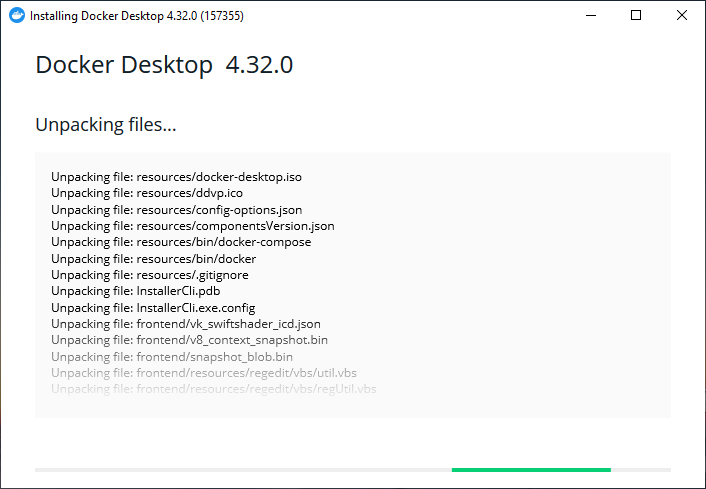Instalando DOcker Desktop en Windows
Debemos aceptar los términos.
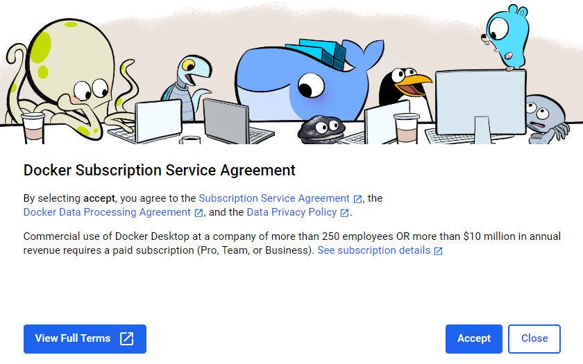Instalando DOcker Desktop en Windows
Elegimos una opción.
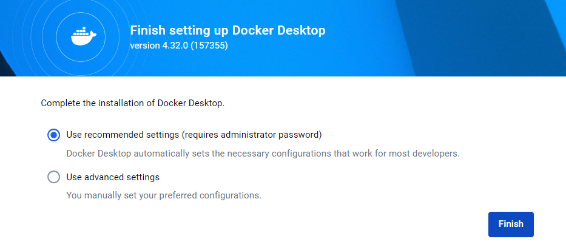Instalando DOcker Desktop en Windows
Podemos continuar sin iniciar sesión ni registrarnos. Pero luego nos pedirá la sesión para descargar las imágenes.
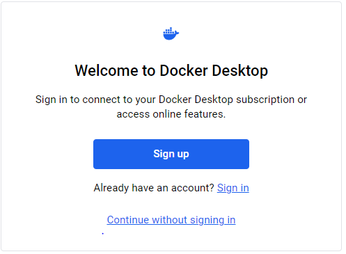Instalando DOcker Desktop en Windows
Instalando DOcker Desktop en Windows
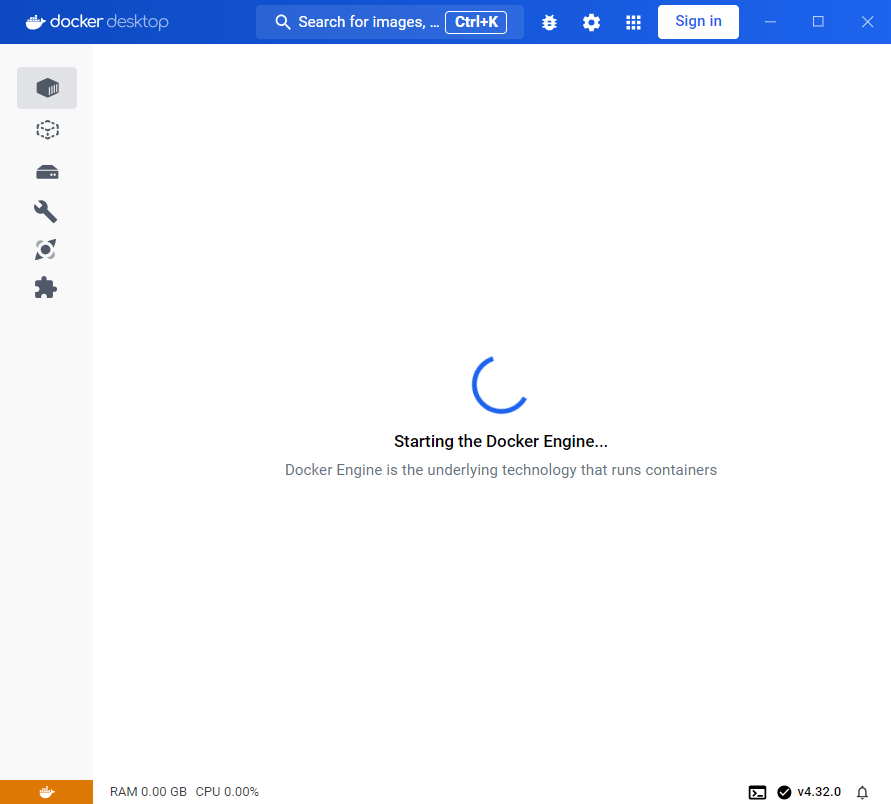Instalando DOcker Desktop en Windows
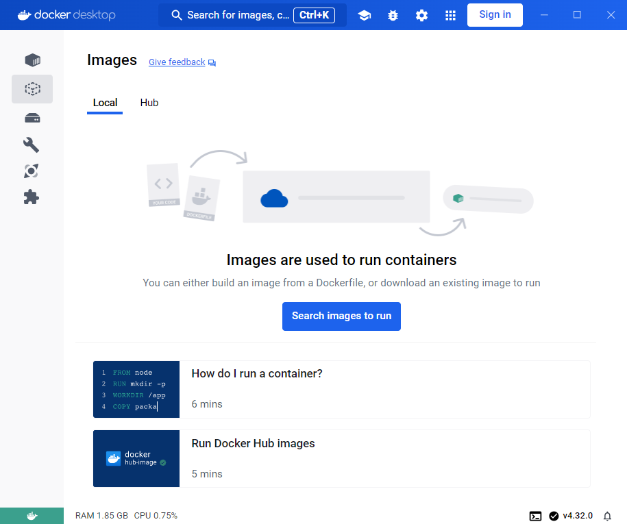Instalando DOcker Desktop en Windows
Una vez instalado y corriendo. Es posible ejecutar comandos docker desde una consola de PowerShell (PS).
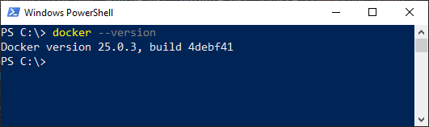 Para consultar la versión instalada ejecutamos:
docker --version
Ejecutando nuestro primer contenedor

docker run hello-world
Ejecutando nuestro primer contenedor
Vista desde Docker Desktop. Containers:
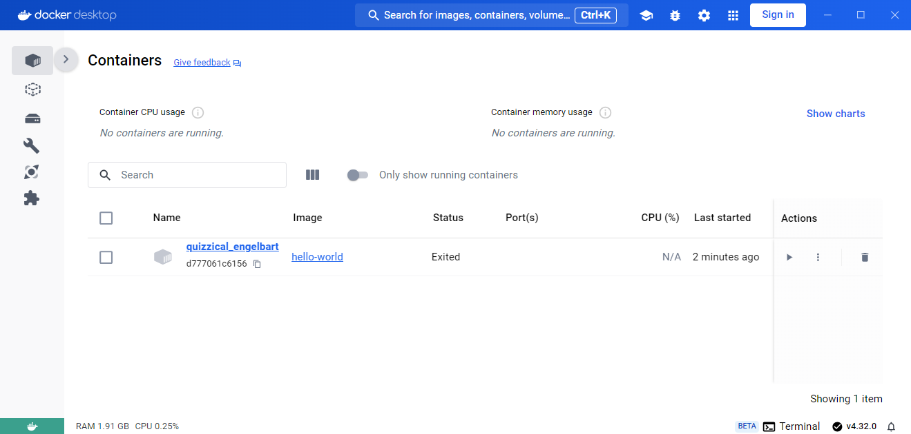Ejecutando nuestro primer contenedor
Vista desde Docker Desktop. Images:
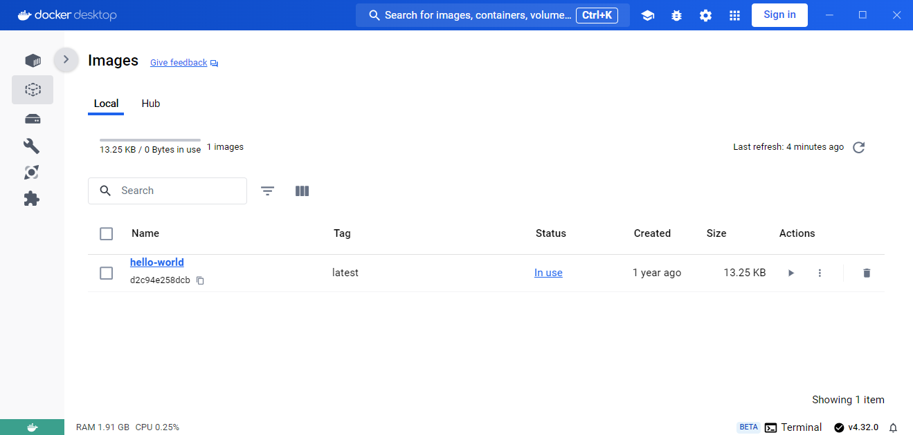Ejecutamos un contenedor Ubuntu
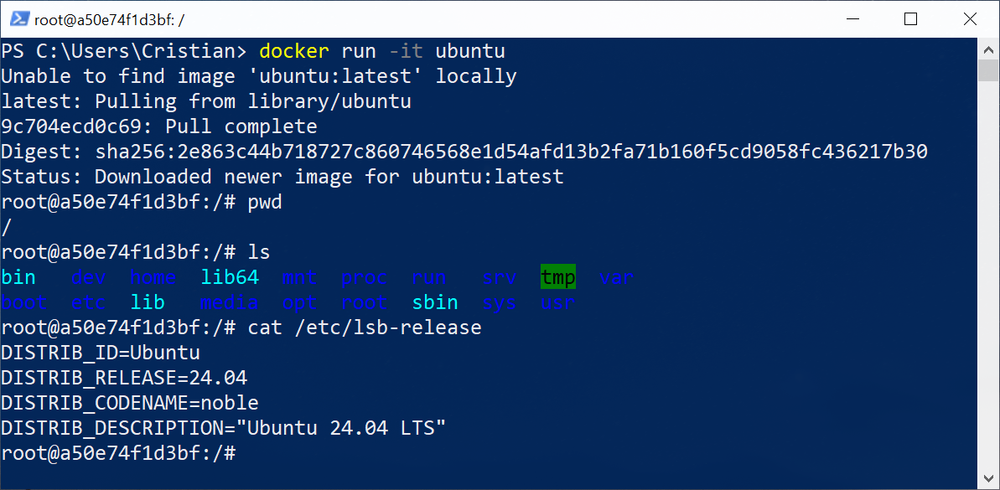
docker run -it ubuntu bash
Ejecutamos un contenedor Ubuntu
¿Qué pasa si volvemos a ejecutar un contenedor Ubuntu? 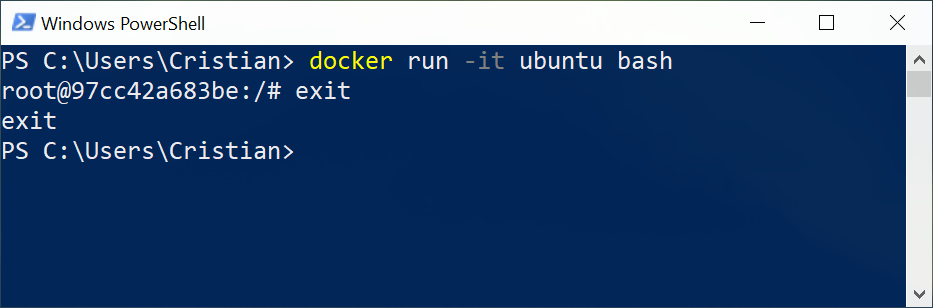- No fue necesario volver a descargar la imágen.
- El contenedor NO es el mismo que se ejecutó la vez anterior.
Consultas
Probando Docker sin instalar
Probando Docker sin instalar
Podemos usar y probar Docker sin instalarlo usando un navegador web desde el sitio PlayWithDocker. Es necesario iniciar sesión. Luego tendremos 4 horas para poder probar.
Actividad práctica en clase:
- Instale Docker en su PC o acceda al sitio PlayWithDocker
- Ejecutar la imágen hello-world*
- Ejecutar en una sesión interactiva la imágen ubuntu
- Ejecutar el siguiente comando para ver la memoria RAM libre en el host.
free -h - ¿Qué dato relevante ha mostrado?
* Importante: Si ha optado por la instalación de Docker en la PC, asegúrese que Docker Desktop esté iniciado.